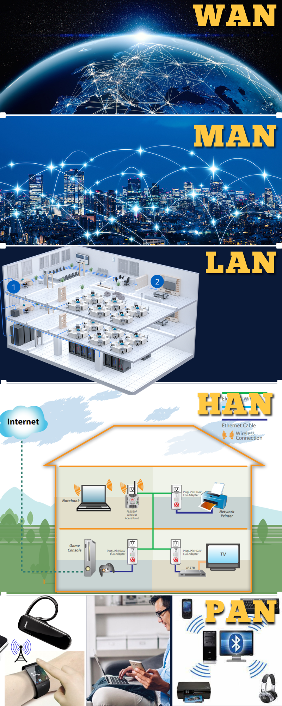
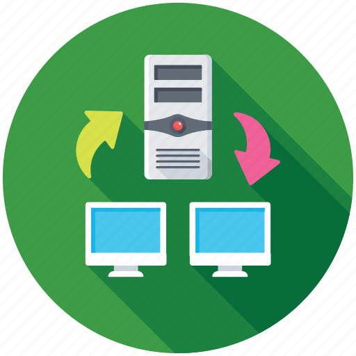
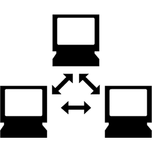

Topic 2. Network Architecture
Your Digital Cityscape

Imagine your digital world as a bustling city where devices are like buildings, and networks are the roads and bridges connecting them.
From your personal digital neighborhood to the vast citywide connections, network architectures shape the landscapes we navigate daily. And just like a city has different areas, from your personal space (PAN) to the city outskirts (WAN), networks come in sizes that suit their roles.
It's time to discover the digital cityscape and how networks, like city planners, design connectivity that fits our everyday lives.
Network Architecture Design
Network architecture is the blueprint governing the structured interaction among network services, devices, and clients. It defines layout, protocols, and connectivity patterns, forming a critical foundation for digital environments. Each architecture type has unique security considerations, connectivity requirements, and service provisions, making it essential for managing and designing digital ecosystems. Key considerations include node distance, network management, and data exchange protocols, collectively ensuring efficient intra-network communication and robust security against threats.
Types of Network Architecture by Distance
|

|
Wide Area Network (WAN): It spans extensive distances, connecting multiple LANs or MANs over telecommunication lines. It forms the backbone for large-scale connectivity, using technologies like the internet, leased lines, or satellite links to facilitate seamless data exchange and resource sharing across diverse geographical locations. Metropolitan Area Network (MAN): It covers a larger geographical area, often serving an entire city or large campus. MANs use technologies like WiMAX for high-speed connectivity over a metropolitan region, supporting applications such as internet access and video conferencing. Local Area Network (LAN): It operates within a confined geographical area, like a building or campus. LANs, commonly found in school labs or offices, enable high-speed data transfer and resource sharing among connected devices, fostering efficient collaboration on a localized scale. Home Area Network (HAN): It is essentially a LAN within a home, connecting all household digital devices. It enables integration and communication between smart appliances, entertainment systems, and security devices, contributing to the concept of a "smart home." Personal Area Network (PAN): It connects devices in close proximity to an individual, using wireless technologies like Bluetooth and Wi-Fi. It facilitates seamless communication and data exchange within a person's immediate personal space, including devices such as smartphones, tablets, and laptops. |
Types of Network Architectures: Peer-to-Peer (P2P) and Client-Server
Networks are structured in various ways to manage and control the flow of data and communication. Two common types of network architectures are:
|
|
In a Peer-to-Peer network, all devices, referred to as "peers," possess equal capabilities and responsibilities. This decentralized architecture eliminates the need for a central server, allowing direct communication between devices. The distribution of resources in P2P networks enhances resilience, as the failure of one node does not significantly impact the entire network. |
|

|
Client-Server architecture involves some computers (servers) providing services, while other computers (clients) utilize those services. Servers typically have more processing power and storage, handling the majority of the workload. While centralization simplifies network maintenance, it introduces a single point of failure. |
Network Administration Levels and Protocols
Network Administration Levels:
|
Central Administration: Tasks are centrally performed from one computer, a common feature in Client-Server networks. This centralized approach, exemplified by the client/server network, streamlines network management but introduces a potential single point of failure. |
|
|
Local Administration: Configuration and maintenance are carried out on individual computers, typical in Peer-to-Peer networks (P2P). In this decentralized model, each device manages its own resources, contributing to the flexibility and resilience of the network. |

|
Ethernet Protocols and Network Protocols:

Ethernet, a widely adopted communication technology, operates based on specific protocols. In wired networks,
adherence to IEEE 802.3 standards is the norm, offering options like gigabit Ethernet for high-speed data transmission. Conversely,
wireless networks, such as Wi-Fi, adhere to IEEE 802.11 standards, providing a framework for efficient wireless communication.
The broader context of network communication involves various protocols that govern how devices interact within a network. These protocols, collectively known as network protocols, establish the rules for formatting, addressing, transmitting, and receiving data across devices. Key among these protocols are:
1. Internet Protocol (IP): Responsible for addressing and routing data packets, IP ensures their successful traversal across networks to reach the intended destination.
2. Transmission Control Protocol (TCP): Ensuring the reliable delivery of data across a network, TCP breaks down information into packets, transmits them, and reassembles them at their destination to maintain data integrity.
3. User Datagram Protocol (UDP): In contrast to TCP, UDP prioritizes speed over perfect accuracy by not guaranteeing the
delivery of packets. This makes it ideal for applications like live streaming and gaming where real-time responsiveness is critical.

REMEMBER!
Comprehending and incorporating these elements is crucial for establishing robust and dependable communication frameworks in both wired and wireless network environments. Together, they constitute the foundation of contemporary networking, guaranteeing smooth data transmission and connectivity across a variety of devices and technologies. The network architecture opens up limitless possibilities to optimize network utilization positively, allowing for the discovery of designs that best align with the growing demands of information technology.